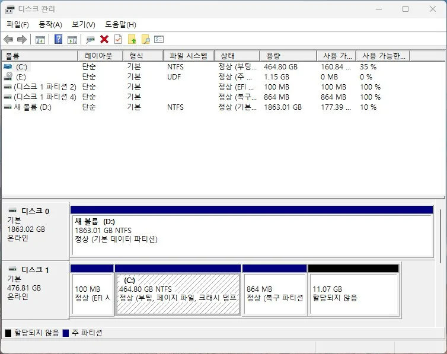

외장하드
외장하드 인식 안 됨 원인과 점검 순서
외장하드·USB 저장장치가 연결해도 인식되지 않는 경우
외장하드가 인식되지 않을 때 가장 먼저 나눠야 할 것은 '연결 문제'인지 '데이터 손상'인지입니다. USB 케이블을 바꾸거나 다른 포트에 연결했을 때 인식된다면 단순 접촉 불량이지만, 여러 포트·여러 PC에서 모두 인식되지 않는다면 외장하드 자체의 고장 가능성이 높습니다.
디스크 관리(diskmgmt.msc)에서는 보이는데 탐색기에는 안 보인다면, 드라이브 문자가 할당되지 않았거나 파티션이 초기화되지 않은 상태일 수 있습니다. 이 경우는 새 드라이브 문자를 할당하거나 파티션을 만들면 해결되지만, 이미 저장된 데이터가 있는 외장하드라면 함부로 초기화하면 데이터가 손실될 수 있으니 주의해야 합니다.
디스크 관리에도 전혀 나타나지 않는다면 전원 공급 부족이나 하드웨어 고장 가능성이 높으므로, 무리하게 여러 번 재연결하기보다 전문 복구 업체 점검을 고려하는 것이 안전합니다.
이 가이드가 필요한 상황
- 디스크 관리(diskmgmt.msc)에도 외장하드가 전혀 나타나지 않는다.
- 연결할 때마다 인식 소리(연결음)만 나고 탐색기에는 나타나지 않는다.
- 연결 시 이상한 소음(클릭음, 반복적인 스핀업/다운)이 난다.
먼저 확인할 항목
- 다른 포트·다른 케이블로 연결 테스트 — USB 포트나 케이블의 접촉 불량이 가장 흔한 원인입니다. 본체 후면 USB 포트에 직접 연결하고, 가능하면 다른 케이블로도 시도해보세요.
- 디스크 관리에서 드라이브 문자 확인 — 디스크는 인식되지만 드라이브 문자가 없어 탐색기에 안 보이는 경우가 있습니다. diskmgmt.msc를 실행해 외장하드가 목록에 보이는지, 드라이브 문자가 할당되어 있는지 확인하세요.

- 다른 PC에서 연결 테스트 — 특정 PC만의 문제인지 외장하드 자체의 문제인지 구분할 수 있습니다. 다른 PC나 노트북에 연결해 동일 증상이 재현되는지 확인하세요.
원인을 더 정확히 나누는 방법
디스크 관리에서 보이지만 초기화되지 않았다고 나올 때
이미 데이터가 저장된 외장하드에서 '초기화되지 않음' 메시지가 나타난다면 절대 초기화하지 마세요. 초기화하면 파티션 테이블이 새로 만들어지며 기존 데이터에 접근할 수 없게 됩니다. 이 경우 데이터 복구가 필요한 상태일 수 있으므로 전문 업체 점검을 먼저 고려해야 합니다.
확인 결과에 따른 다음 단계
- 다른 포트·PC에서는 정상 인식될 때 — 원래 PC의 USB 포트나 드라이버 문제이니 장치 관리자에서 USB 컨트롤러 드라이버를 점검하세요.
- 어떤 포트·PC에서도 인식되지 않을 때 — 외장하드 자체의 고장 가능성이 높습니다. 데이터가 중요하다면 함부로 재시도하지 말고 복구 업체에 먼저 문의하세요.
피해야 할 실수
- 인식이 안 된다고 여러 번 반복해서 연결을 껐다 켰다 하는 것(물리적 고장 시 손상 악화 가능)
- 데이터가 있는 상태에서 '초기화되지 않음' 메시지가 뜬다고 바로 초기화하는 것
실제 사용자 사례
USB 허브 대신 직결로 해결
멀티탭형 USB 허브에 연결했을 때만 외장하드가 인식되지 않던 사례가 있습니다. 본체 후면 USB 포트에 직접 연결하자 정상적으로 인식되었고, 원인은 허브를 통한 전원 공급 부족으로 확인되었습니다.
포인트: USB 허브 경유 시에만 인식이 안 된다면 케이블이나 하드 자체보다 전원 공급 부족을 먼저 의심하세요.
자주 묻는 질문
- 외장하드에서 클릭음이 나는데 계속 연결해도 되나요? 아닙니다. 클릭음은 하드디스크 내부 헤드 고장의 대표적인 신호로, 계속 시도하면 데이터 복구 가능성이 낮아질 수 있습니다. 즉시 전원을 분리하고 복구 업체에 문의하세요.
- 디스크 관리에서 '초기화되지 않음'이라고 뜨면 초기화해야 하나요? 기존에 저장된 중요 데이터가 없다면 초기화해도 되지만, 데이터가 있었다면 초기화 전에 반드시 데이터 복구 가능성부터 확인해야 합니다.
- USB 허브에 연결하면 왜 인식이 안 되나요? 외장하드, 특히 2.5인치 외장 HDD는 소비 전력이 커서 전원 공급이 부족한 허브를 거치면 인식이 불안정할 수 있습니다. 가능하면 본체에 직접 연결하세요.
최종 검토일: 2026-08-05